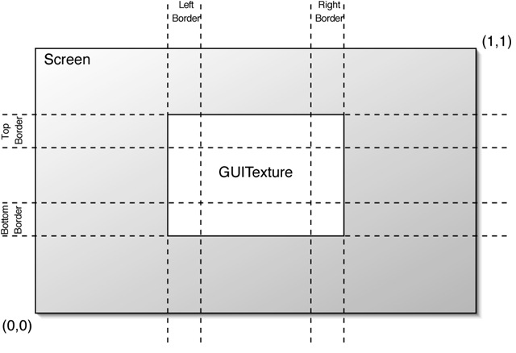

GUI Textures are displayed as flat images in 2D. Positioning and scaling is done using the x and y components of the position and scale properties of the Transform component attached to the same game object. The positioning is relative to the screen width and height.
|  |
Properties
| Property: | Function: |
|---|---|
| The image used by the GUI Texture. | |
| The color can be used to tint the image drawn on screen. | |
| Used for pixel-based control of the scaling and positioning of the GUI Texture. When position and scale are set to to 0 the Pixel Inset parameters define the lower-left and upper right pixel coordinates of the image. If position and/or scale are set to different values, the pixel position of each corner will follow the following formulas. lowerLeft=(screenWidth*position.x - screenWidth*scale.x/2 + Xmin, screenHeight*position.y - screenHeight*scale.y/2 + Ymin) upperRight=(screenWidth*position.x + screenWidth*scale.x/2 + Xmax, screenHeight*position.y + screenHeight*scale.y/2 + Ymax) | |
Top Border, Bottom Border | The number of pixels not to scale with the texture at each edge of the image. As you rarely know the resolution your game runs in, chances are your GUI will get scaled. Some GUI textures have a border at the edge that is meant to be an exact number of pixels. In order for this to work, set the border sizes to match those from the texture. |